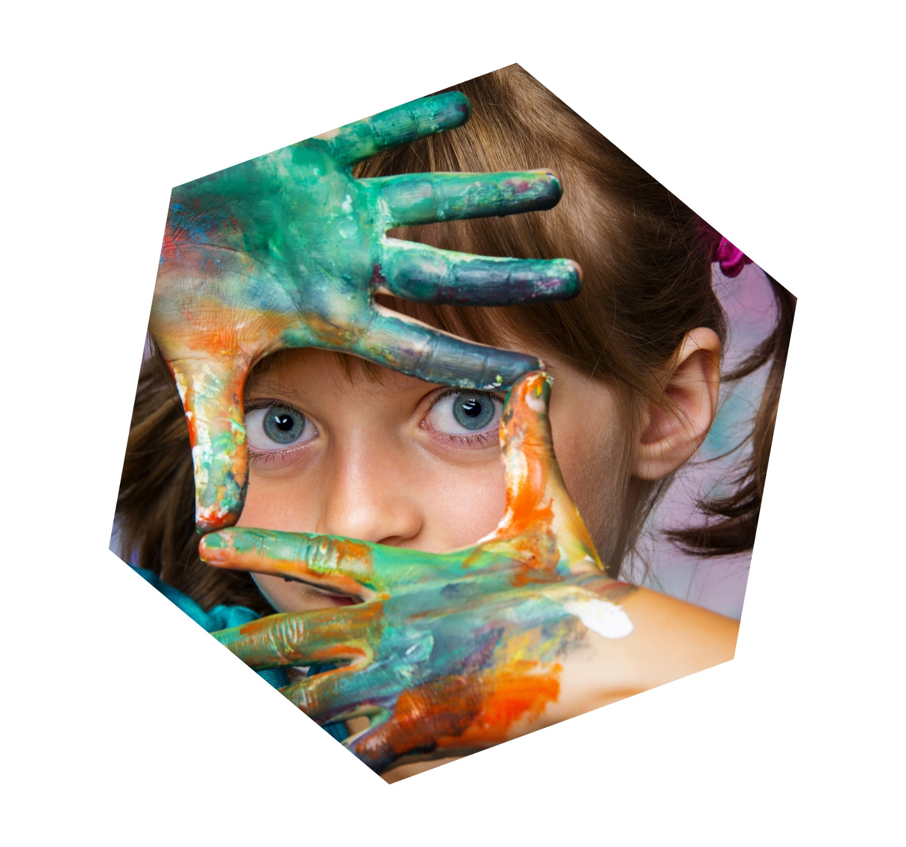
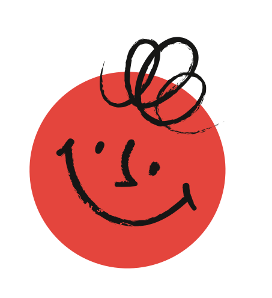
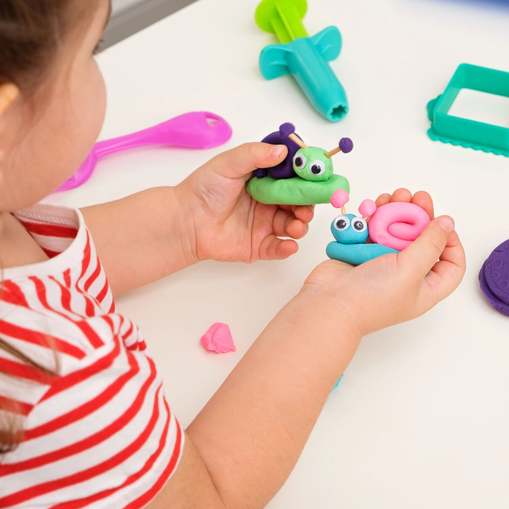
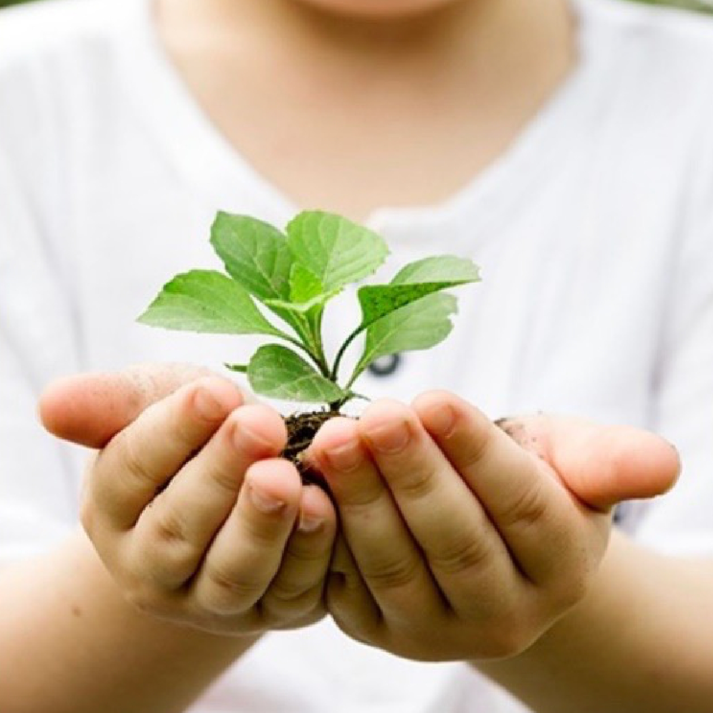
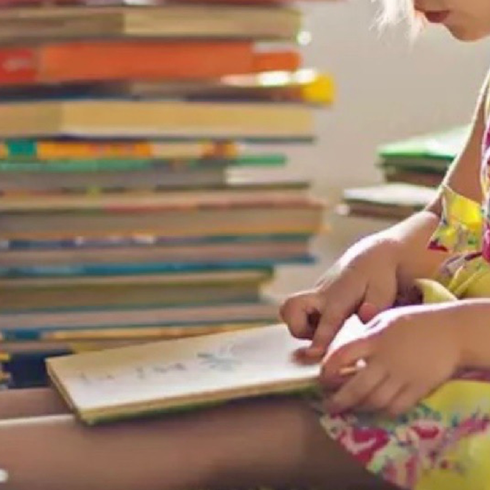
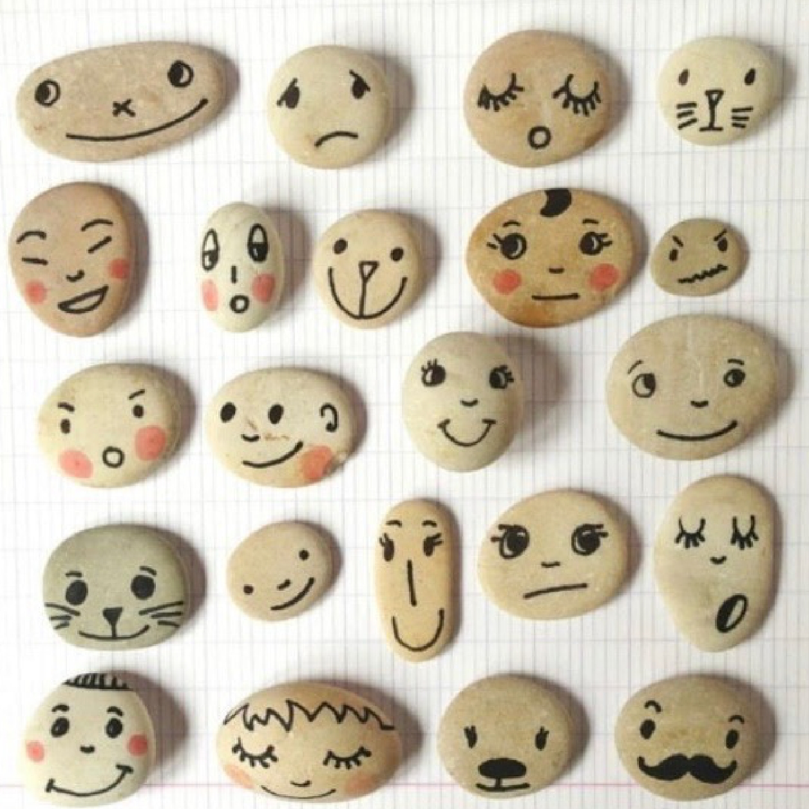
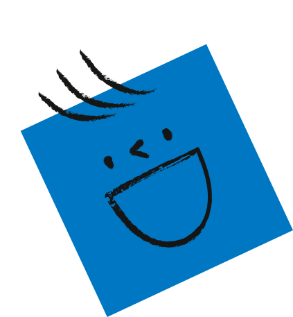
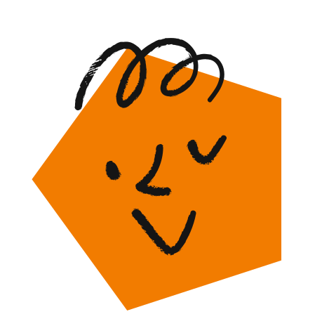

AS NOSSAS OFICINAS


OFICINA CRIATIVA
Realizamos 2 ou 3 projetos criativos, com liberdade na escolha e utilização dos materiais. Sem limites à imaginação, podemos criar uma árvore que fala ou uma nuvem de chapéu!

OFICINA CUIDAR
O nosso foco está na natureza, pensando em tudo o que ela nos dá, mas também no cuidar. Vamos criar uma nova casa para uma planta e com amor aprender a cuidar dela.



OFICINA HISTÓRIA
ESCONDIDA
Escolhemos um livro e através da sua leitura em conjunto vamos descobrir a história escondida no seu, e no nosso, interior. Vamos representá-la por mímicas, expressões, vontades e desejos.

OFICINA DA
ESCRITA CRIATIVA
Pensar e escrever torto por linhas direitas. Vamos criar uma história em conjunto de forma individual. No fim, vamos perceber que todos nós contribuímos para este todo!



OFICINA DE ARTES
Pintar, desenhar, colorir. Sem limites, podemos pintar com o pincel, com as mãos ou com os pés. Vamos colocar à disposição folhas brancas e vários materiais de pintura e vamos aprender a preencher o vazio.

OFICINA DAS EMOÇÕES
Através das expressões faciais e das cores vamos contar o que estamos a sentir. Vamos criar um amigo imaginário para levar no bolso.